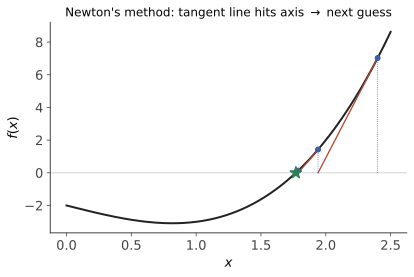
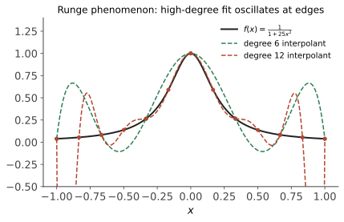

数值 III · 方程求根、插值与逼近
两个古老而常用的主题。求根是"迭代思想"的教学样板（二分的稳、Newton 的快、不动点的统一视角）；插值与逼近回答"怎么用简单函数替身复杂函数"——以及那个著名的反例：点取得越多越糟的 Runge 现象。
1. 非线性方程求根 \(f(x) = 0\)

二分法：连续函数变号区间反复对半（零点定理，数分 I 的算法化）。每步区间减半——线性收敛、绝对稳健、要 \(k\) 位精度约 \(\log_2\frac{b-a}{\varepsilon}\) 步。打底用。
不动点迭代（统一视角）：改写 \(f(x) = 0 \iff x = g(x)\)，迭代 \(x_{k+1} = g(x_k)\)。
定理（局部收敛） \(g\) 连续可微，\(|g'(x^*)| < 1\) ⇒ 附近迭代收敛（误差 \(e_{k+1} \approx g'(x^*)e_k\)，线性收敛率 \(|g'|\)）；\(|g'(x^*)| > 1\) 则推开。 （压缩映像原理的局部版——ODE 页 Picard 迭代、本页 Newton 法、值迭代（优化 IV）全是这一个定理的分身。同一方程的不同改写 \(g\) 收敛性天差地别——改写是技术活，例 1 演示。）
Newton 法：切线代曲线（数分 II 线性化的算法化）：
二次收敛（\(e_{k+1} \approx \frac{|f''|}{2|f'|}e_k^2\)——有效数字每步翻倍；视角二：它是 \(g = x - f/f'\) 的不动点迭代且 \(g'(x^*) = 0\)，"收敛率为零"即超线性）。代价与风险：要导数、单根附近才保证、初值差会飞（实务：二分圈定 + Newton 收尾）。割线法：差商代导数，收敛阶 \(\approx 1.618\)（黄金比！），免导数——不会求导时的 Newton。🔗 优化 II 的 Newton/拟 Newton 正是本节在 \(\nabla f = 0\) 上的多维版；torch 里 rsqrt 类硬件指令的内部实现也是 Newton 迭代。
2. 多项式插值
问题：过 \(n+1\) 个点 \((x_i, y_i)\) 求次数 \(\leq n\) 的多项式（存在唯一——Vandermonde 行列式非零，高代 II）。两种写法同一多项式：
Lagrange 形式（理论顺手）：\(P_n(x) = \sum_i y_i\, \ell_i(x)\)，基函数 \(\ell_i(x) = \prod_{j \neq i}\frac{x - x_j}{x_i - x_j}\)（在 \(x_i\) 取 1、其余节点取 0）。
Newton 形式（计算顺手）：\(P_n(x) = f[x_0] + f[x_0,x_1](x - x_0) + f[x_0,x_1,x_2](x-x_0)(x-x_1) + \cdots\)，系数是差商（差商表递推 \(f[x_i..x_j] = \frac{f[x_{i+1}..x_j] - f[x_i..x_{j-1}]}{x_j - x_i}\)）——加一个新点只需添一项，增量友好。
误差余项（Taylor 余项的插值版，结构完全平行——数分 II）：
3. Runge 现象与两条出路

反例（Runge, 1901）：\(f(x) = \frac{1}{1 + 25x^2}\) 在 \([-1,1]\) 等距节点插值——次数越高，区间端部震荡越猛，\(n \to \infty\) 不收敛反爆炸。根源：余项中 \(\prod(x - x_i)\) 在等距节点下端部巨大 + 高阶导数增长。"多项式次数"是又一个过拟合旋钮——这正是 ai 课 01 讲（lab01 亲手做过的）过拟合实验的数值分析出处；插值（穿过每个点）对带噪数据必然过拟合。
出路一（换节点）：Chebyshev 节点 \(x_i = \cos\frac{(2i+1)\pi}{2n+2}\)（端部加密），使 \(\max|\prod(x - x_i)|\) 最小——高次插值起死回生（谱方法的地基，知其所以然即可）。
出路二（降次分段）——三次样条：每段三次多项式，节点处 \(C^2\) 拼接（函数、一二阶导全连续）+ 两个边界条件 ⇒ 系数由三对角方程组唯一定（追赶法 \(O(n)\) 解，上一页的特例）。样条以"分段低次"换取无震荡 + 极好的光滑视觉——CAD、字体、动画曲线的工业标准。心法：宁可分段低次，不要全局高次。
4. 最小二乘拟合（数据带噪时的正确姿势）
放弃"穿过每点"，改求 \(\min_c \sum_i \big(y_i - \sum_k c_k \varphi_k(x_i)\big)^2\)——正规方程 \(A^\top A c = A^\top y\)（高代最小二乘/统计 V OLS 的同一公式第三次出场）。数值要点回收上一页：正规方程条件数是 \(\kappa(A)^2\)（平方级恶化！），认真做用 QR 分解直接解最小二乘——"同一数学、不同算法、精度两个档次"的又一标本。
插值 vs 拟合的选择判据：数据精确（函数表、几何造型）→ 插值/样条；数据带噪（实验、统计）→ 低维拟合 + 残差诊断（统计 V）。
5. 典型例题
例 1（改写的艺术） 解 \(x^3 - x - 1 = 0\)（根 \(\approx 1.325\)）。改写 A：\(x = x^3 - 1\)，\(g' = 3x^2 \approx 5.3 > 1\) 发散；改写 B：\(x = \sqrt[3]{x + 1}\)，\(g' = \frac13(x+1)^{-2/3} \approx 0.19 < 1\) 收敛（每步误差乘 0.19）。同一方程，生死两重天。
例 2（Newton 手算） \(\sqrt 2\)：解 \(x^2 - 2 = 0\)，\(x_{k+1} = \frac12(x_k + \frac{2}{x_k})\)。从 \(x_0 = 1\)：\(1.5,\ 1.41\overline{6},\ 1.414216,\ 1.41421356\dots\)——四步 8 位有效，二次收敛的体感（这也是巴比伦开方法，人类最古老的算法之一）。
例 3（差商表） 过 \((0,1), (1,2), (2,5)\)：差商 \(f[x_0]=1,\ f[x_0,x_1]=1,\ f[x_0,x_1,x_2]=\frac{3-1}{2}=1\) ⇒ \(P_2 = 1 + x + x(x-1) = x^2 + 1\)。验证三点全过 ✓。\(\blacksquare\)
最后一页：积分算不出原函数怎么办、微分方程解不出解析解怎么办——数值积分与 ODE 数值解，扩散模型采样器的老家。